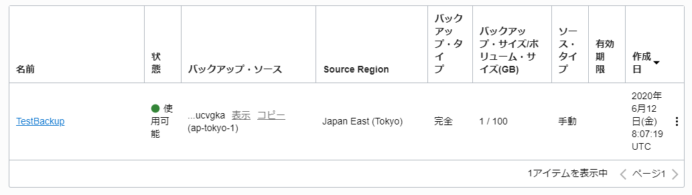
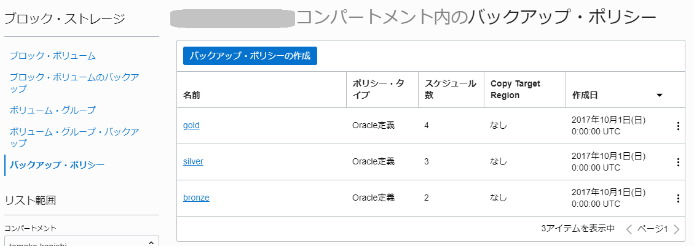
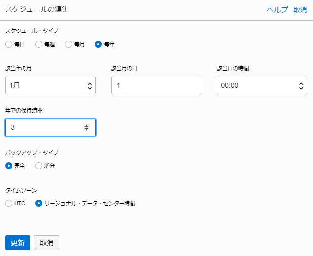
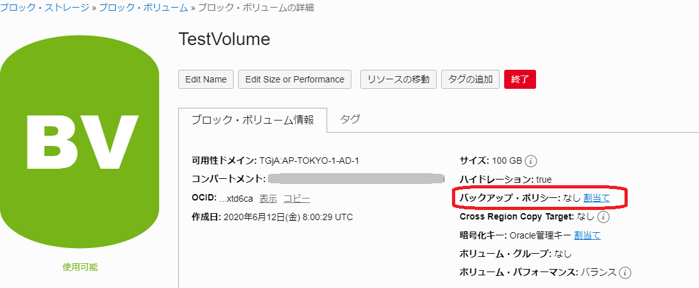
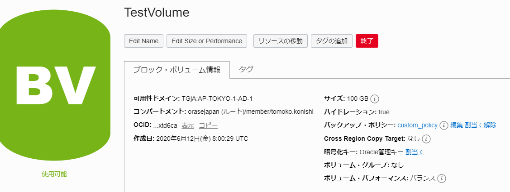
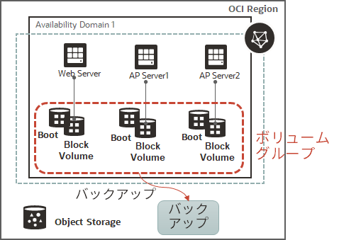

チュートリアル一覧に戻る : Oracle Cloud Infrastructure チュートリアル
運用管理を行う上で、データのバックアップは重要です。Oracle Cloud Infrastructure ブロック・ボリューム・サービスでは、バックアップ・リストアやクローン、別のリージョンへのバックアップのコピーなどを行うことができます。また、基本的にブロック・ボリュームでもブート・ボリュームでも同様の機能が提供されています。
ブロック・ボリューム自体は可用性ドメイン固有のリソースですが、バックアップを取得することで別の可用性ドメインにリストアしたり、別のリージョンにコピーして利用することが可能となります。
ブロック・ボリュームのバックアップ機能はPoint-in-timeのスナップショットで、内部的にはオブジェクト・ストレージの領域にバックアップが行われます。
データの保護要件や可用性要件に応じて適切な手法でバックアップを取得し、安全に運用を行いましょう。
バックアップの概要

所要時間 : 約20分
前提条件 :
- チュートリアル入門編 :その4 - ブロック・ボリュームをインスタンスにアタッチする を完了し、ブロック・ボリュームを作成済みであること。
- トライアル環境ではホームリージョン以外のリージョンの利用ができません。バックアップを別リージョンにコピーするためには有償環境で、該当のリージョンをサブスクライブする必要があります。
注意 : チュートリアル内の画面ショットについては Oracle Cloud Infrastructure の現在のコンソール画面と異なっている場合があります
目次：
- 1. ブロック・ボリュームの手動バックアップの作成
- 2. ブロック・ボリュームのバックアップからのリストア
- 3. リージョン間でのブロック・ボリュームのバックアップのコピー
- 4. ブロック・ボリュームのバックアップ・ポリシーの作成
- 5. ボリューム・グループの作成と管理
1. ブロック・ボリュームの手動バックアップの作成
まずは既存のブロック・ボリュームのバックアップを手動で取得してみましょう。今回は、チュートリアル :ブロック・ボリュームをインスタンスにアタッチする - Oracle Cloud Infrastructureを使ってみよう(その4) で作成したブロック・ボリュームを使用します。
今回はブロック・ボリュームを例に実施しますが、ブート・ボリュームでも同様の手順で実施することができます。ブート・ボリュームの場合は、コンピュート → ブート・ボリューム から操作していきます。メニューの場所が異なりますので注意してください。
- コンソールメニューから ブロック・ストレージ → ブロック・ボリューム を選択し、作成済みの ブロック・ボリュームの一覧を表示します。
-
バックアップしたいボリュームの行の右側にカーソルをあて、出てきたメニューから 手動バックアップの作成 をクリックします。アタッチ済みのインスタンスが起動中でも停止する必要はありません。バックアップはオンラインで取得可能です。

- ブロック・ボリュームのバックアップ のウィンドウで、以下の項目を入力し、ブロック・ボリュームのバックアップの作成 ボタンをクリックします。
- 名前 - 任意
- バックアップ・タイプ - 完全バックアップ を選択します。
（過去のバックアップがない場合は完全バックアップになります。二回目以降は増分バックアップも可能です。

-
メニューから ブロック・ストレージ → ブロック・ボリュームのバックアップ を選択し、バックアップの一覧を表示します。 作成中のバックアップが表示されています。バックアップの作成時間はデータ量に依存しますが、ほとんどデータが格納されていない場合は、1～2分ほど待つと自動的に状態が 作成中… から 使用可能 に変わります。これでバックアップは完了です。


- 完成したバックアップの名前のリンクをクリックし、詳細画面を開きます。バックアップ・サイズを見てみると、ボリュームのサイズよりも小さいことがわかります。これはデータのみをバックアップしているためです。

2. ブロック・ボリュームのバックアップからのリストア
次に、作成したバックアップをリストアしてみましょう。ブロック・ボリュームのリストアは、既存のボリューム上にデータをリストアするのではなく、新しいボリュームとしてリストアすることになります。完全バックアップからでも増分バックアップからでもリストアできます。
-
メニューから ブロック・ストレージ → ブロック・ボリュームのバックアップ を開き、作成済みのバックアップの名前のリンクをクリックします。
-
対象のブロック・ボリュームのバックアップの詳細画面で ブロック・ボリュームの作成 ボタンをクリックします。
- 表示された ブロック・ボリュームの作成 ウィンドウで以下の項目を入力し、左下の ブロック・ボリュームの作成 ボタンをクリックします。
- 名前 - 任意（ここでは Restore_Volume にしています）
- コンパートメントに作成 - デフォルトのまま
- 可用性ドメイン - デフォルトのまま。複数可用性ドメインの存在するリージョンの場合は変更も可能です
- VOLUME SIZE AND PERFORMANCE - 今回はデフォルトのまま。ここで任意のサイズや性能タイプに変更することもできます
- バックアップ・ポリシー - 指定せず
- 暗号化 - デフォルトのまま
-
新規のブロック・ボリュームとしてリストアが行われます。リストアが完了するとステータスが プロビジョニング中 から 使用可能 に自動的に変化します。リストアにかかる時間は、データのサイズやボリュームのサイズにかかわらず、約1～2分です。
-
リストアが完了したので、コンピュート・インスタンス側でアタッチしていた既存のブロック・ボリュームからリストアした新しいブロック・ボリュームにアタッチしなおします。メニューの コンピュート → インスタンス からブロック・ボリュームをアタッチしていたインスタンスの名前をクリックし、インスタンスの詳細 画面を開きます。

-
インスタンスの詳細画面の下の リソース から アタッチされたブロック・ボリューム をクリックし、アタッチ済みブロック・ボリュームを表示します。ボリュームの行の右端にカーソルを当て、表示されたメニューから デタッチ をクリックします。

-
ブロック・ボリュームのデタッチ ウィンドウで、デタッチの続行 ボタンをクリックします。さらに表示された確認画面で OK をクリックします。


-
ボリュームがデタッチされたら、ボリュームのアタッチ ボタンをクリックします。

- ボリュームのアタッチ ウィンドウで以下の項目を入力し、アタッチ ボタンをクリックします。
- ボリューム・アタッチメント・タイプ - iSCSIもしくは準仮想化を選択。iSCSIの場合にはアタッチ後にOS上でアタッチコマンドを実行します。
- ボリュームの選択 - さきほどリストアしたボリュームを選択。（ここではRestore_Volume）
- デバイス・パス - どれかのパスを選択。
- アクセス - 読取り/書込み を選択

- リストアした新規ボリュームがアタッチされました。

3. リージョン間でのブロック・ボリュームのバックアップのコピー
バックアップの実態は、内部的に同一リージョン内のオブジェクトストレージの領域に格納されています。もしリージョン障害に対応するためのDR構成を必要とする場合には、別のリージョンへバックアップを退避しておく必要があります。
-
メニューから、ブロック・ストレージ → ブロック・ボリュームのバックアップ をクリックしてバックアップの一覧を表示します。コピーしたいバックアップの右端にカーソルを当て、別のリージョンにコピー のメニューをクリックします。

- ブロック・ボリュームのバックアップのコピー ウィンドウで以下の項目を入力し、ブロック・ボリュームのバックアップのコピー ボタンをクリックします。
- 名前 - デフォルトのまま（任意の名前に変更することも可能です）
- 宛先リージョン - バックアップをコピーしたい宛先リージョンを選択。ここではOsakaリージョンを選択しています。
- 暗号化 - デフォルトのまま

-
OK ボタンをクリックしてウィンドウを閉じます。

-
コンソール上部のリージョン・セレクターで、宛先のOsakaリージョンを選択します。Osakaリージョン側にコピーが進行中であることがわかります。

- Osakaリージョンへのバックアップのコピーが完了しました。これで、何かTokyoリージョンのブロック・ボリュームのバックアップに問題があった場合にはOsakaリージョンのバックアップをまたTokyoに戻すこともできますし、Osakaリージョン内でリストアして利用することも可能です。 
4. ブロック・ボリュームのバックアップ・ポリシーの作成
通常運用中にバックアップを毎回手動で作成するのは効率的ではないので、バックアップのスケジューリング実行を設定することが可能です。バックアップの実施頻度や保存期間、完全/増分バックアップのタイプなどを定義したバックアップ・ポリシーを使えば、バックアップ運用を自動化することが可能です。バックアップ・ポリシーは、事前定義済みの3タイプ（Bronze / Silver / Gold）以外に、カスタムで用意することもできます。
-
メニューから ブロック・ストレージ → バックアップ・ポリシー を選択します。デフォルトでは、事前定義済みの3つのバックアップ・ポリシーが表示されています。 
-
bronze の名前のリンクをクリックしてポリシーの詳細を表示します。bronzeでは年次のフルバックアップと月次の増分バックアップが定義されています。このポリシーをベースにしてカスタマイズしたバックアップ・ポリシーを作成するため、複製 ボタンをクリックします。

- バックアップ・ポリシーの複製 画面で、以下の項目を入力し、バックアップ・ポリシーの複製 ボタンをクリックします。
- 名前 - 任意の名前。ここではcustom_policyにしています。
- コンパートメントに複製 - デフォルトのまま

-
複製したバックアップ・ポリシーの内容を変更していきます。年次のフルバックアップを5年保存から3年保存に変更します。スケジュールの中から、毎年 の行の右側にカーソルをあてメニューを表示し、編集 をクリックします。

-
スケジュールの編集 ウィンドウで、年での保持期間を 5 から 3 に変更し、更新 ボタンをクリックします。

-
作成したポリシーをブロック・ボリュームに割り当てることで、そのボリュームの自動バックアップが有効になります。メニューから、ブロック・ストレージ → ブロック・ボリューム でブロックボリュームの一覧から既存のブロック・ボリュームを選択し、ブロック・ボリュームの詳細画面を表示します。
-
ブロック・ボリュームの詳細画面から、バックアップ・ポリシー：なし の右側の 割当て リンクをクリックします。 
-
バックアップ・ポリシーの割当てウィンドウで、バックアップ・ポリシーに先ほど作成したカスタム・ポリシーを選択し、割当て ボタンをクリックします。
- ブロック・ボリュームにバックアップ・ポリシーの割当てが完了しました。 
5. ボリューム・グループの作成と管理
一つのインスタンスに複数のボリュームがアタッチされているケース（ブート・ボリュームとブロック・ボリューム、あるいは複数のブロック・ボリューム）や、同一システム用の複数インスタンスで同じタイミングでバックアップを取得したいケースがあります。
このような場合には、それぞれのボリュームごとにバックアップを取得するのではなく、ボリューム・グループ として複数のボリュームをまとめることで、一貫性のあるバックアップを取得することが可能です。

-
メニューから、ブロック・ストレージ → ボリューム・グループ を選択し、ボリューム・グループの作成 ボタンをクリックします。

- ボリューム・グループの作成 ウィンドウで以下の項目を入力し、ボリューム・グループの作成 ボタンをクリックします。
- 名前 - 任意の名前（ここではTestGroupにしています）
- コンパートメントに作成 - デフォルトのまま
- 可用性ドメインに作成 - デフォルトのまま
- ボリューム - インスタンスのブート・ボリュームと、アタッチ済みのブロック・ボリュームの2つを選択します。ボリュームを追加するときは + ボリューム ボタンで増やすことができます。

-
ボリューム・グループが作成できました。

-
ボリュームグループのバックアップを取得します。メニューからブロック・ストレージ → ボリューム・グループ でボリュームグループの一覧を表示し、作成したボリューム・グループの行の右側にカーソルをあててメニューを表示します。ボリューム・グループ・バックアップの作成 をクリックします。
-
ブロック・ボリューム・バックアップ名を入力し、作成 ボタンをクリックします。
-
ブロック・ストレージ → ボリューム・グループ・バックアップ メニューをクリックし、バックアップの一覧を表示します。バックアップが完了すると、ステータスが 作成中 から 使用可能 に変わります。これでバックアップは完了です。


-
作成完了したボリューム・グループ・バックアップ の名前のリンクをクリックし、ボリューム・グループ・バックアップの詳細画面を表示します。
- 画面下にスクロールすると、このボリューム・グループ・バックアップに含まれるバックアップを確認できます。ブロック・ボリュームのバックアップとブート・ボリュームのバックアップがそれぞれ存在することがわかります。リストアを行いたい場合はここから新規ボリュームとして作成することが可能です。
以上で、ブロック・ボリュームのバックアップのチュートリアルは終了です。
チュートリアル一覧に戻る : Oracle Cloud Infrastructure チュートリアル